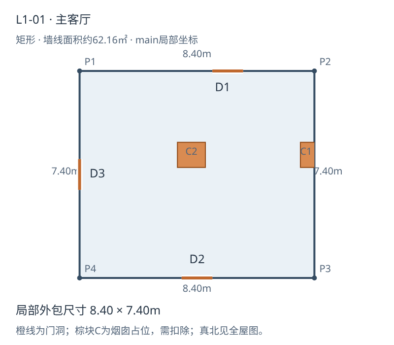
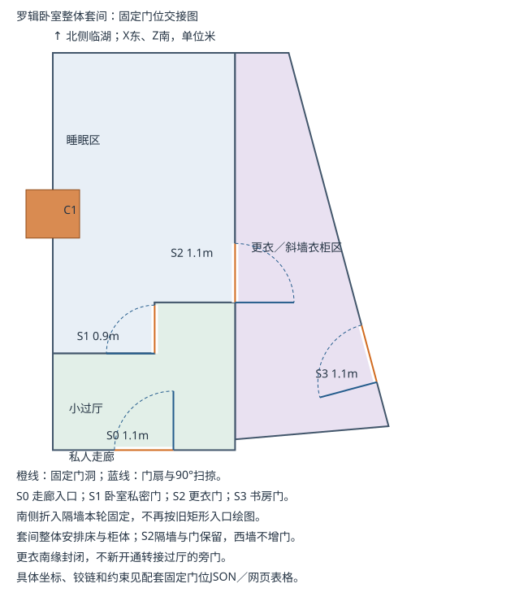
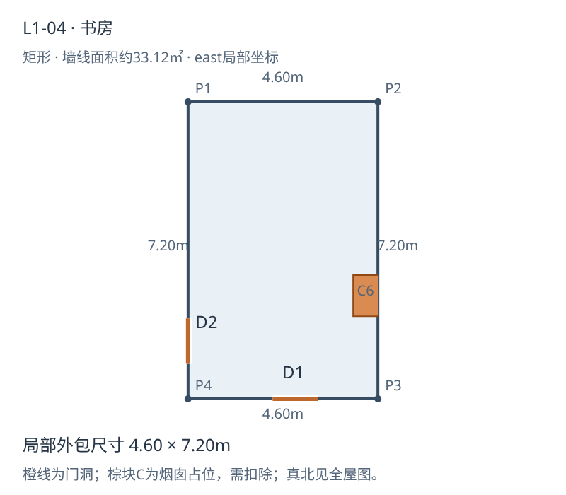
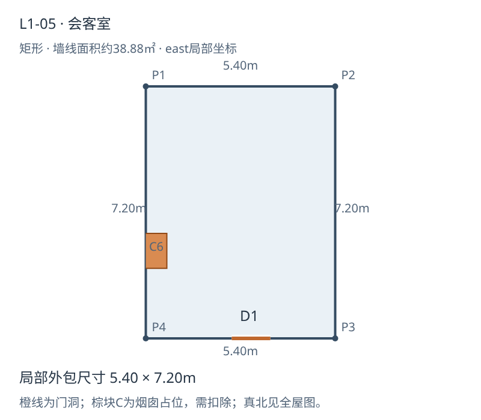
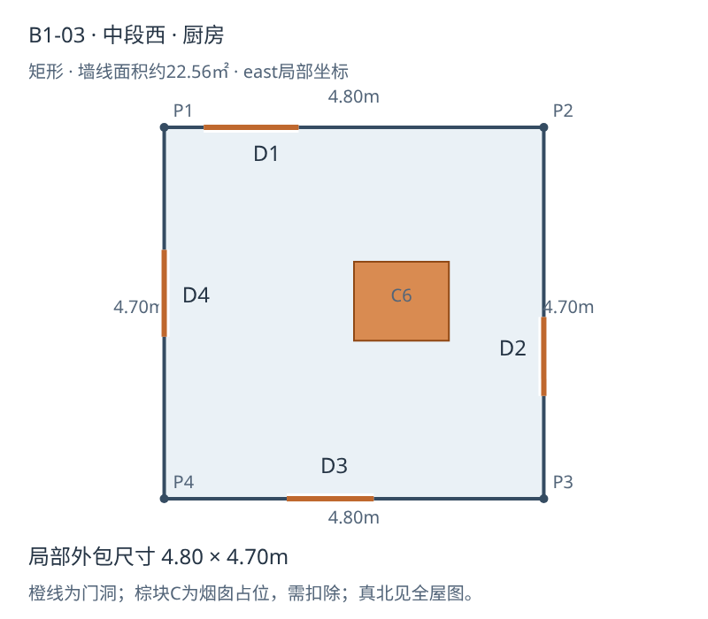
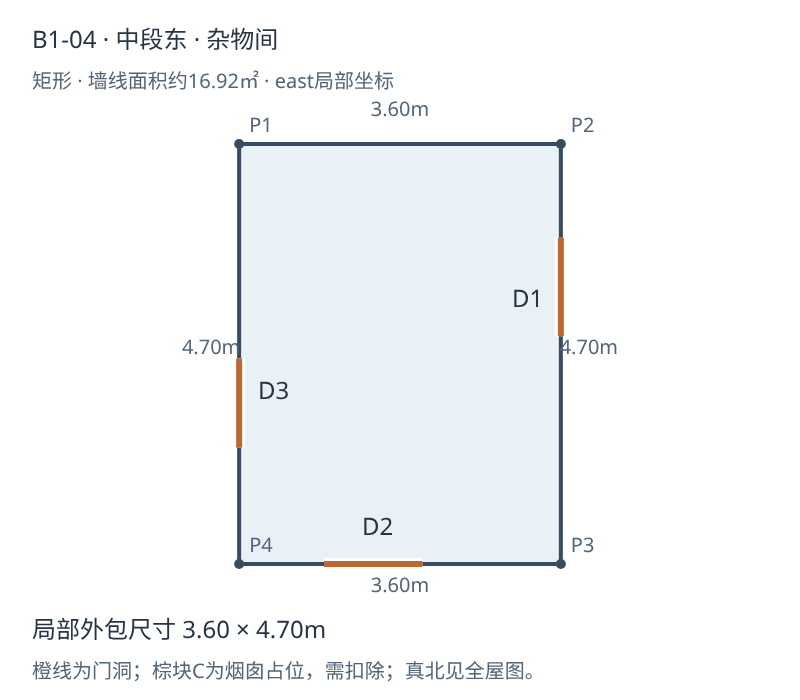
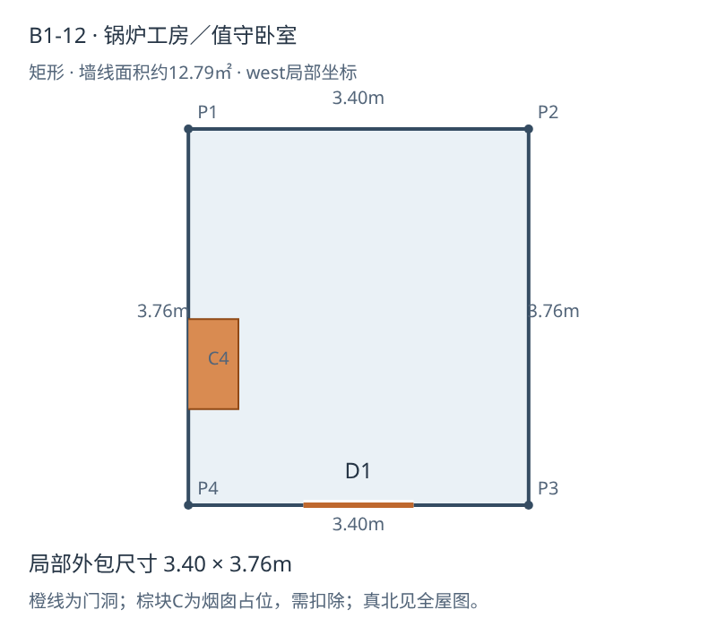
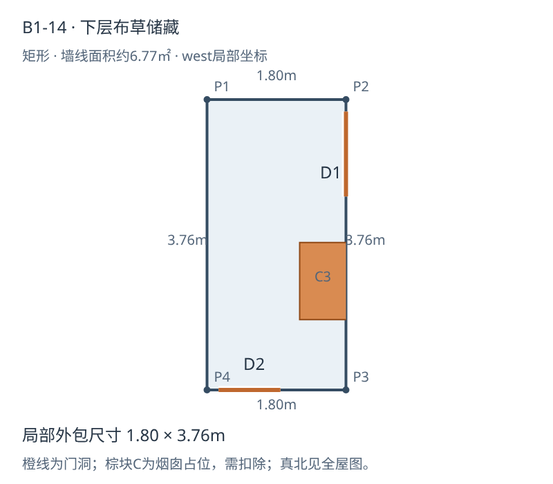
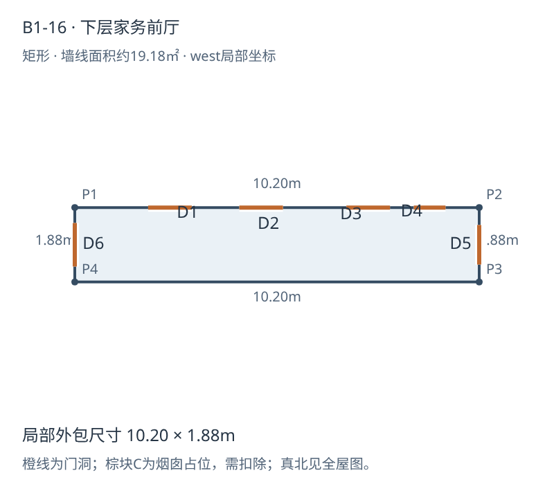
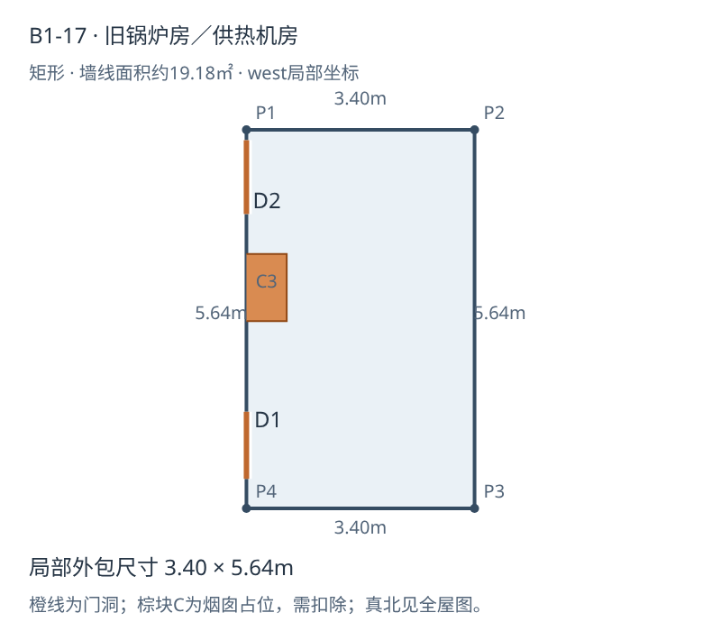

L1-01 主客厅

避让C1、C2，按新核心重排壁炉与座位。
米制SVG画室已落位：L1-18原梯形家庭起居室改为庄颜画室，边界、两门与C3不动。42-L折返定论：罗辑先沿西翼走廊往放映厅走，经过两扇门后返回画室；收完画具才一起回卧室。不得为数门新增门洞。42-L动作与后续单间设计交接。单间画具家具已排（2026-11-06）：L1-18画室布局俯视图——画架/工作桌干湿分区/访客短坐/门边站位/42-L折返走位入图；北墙窗位与HV05末端为提案待核，门墙C3未动。
浴室v2（42-L改归西翼老人浴室，罗辑后期常用）：通用房改造／原生洗浴分期对照 · L1-10罗辑浴室 · L1-20老人浴室。沿原门洞，内部器具试排，未回写三维家具。
场景清单、05-L前后设备表与检查任务。覆盖02/31/38-L门厅动作，区分别墅/附楼入口。另见39-L机房位置正文修订log（独立待办，正文尚未改）。
餐厨最新修订：餐桌已移近主人入口；B梯为双跑折返、下层西口/上层东口，无向梯内开启的门扇。联合图与三维已同步，楼梯净高/结构仍待剖面核。
新增：主楼小厨房＋临湖餐厅首版联合图 · 章节、门洞与设备交接。家具/门扇试排，正文未改。
2026-11-06：L1-05会客室首版（家具、门扇与空调占位） · 16-L提前使用／正式验收口径记录。正文未改。
2026-11-06设定补充：1890年代热水浴室工程与室外厕所沿用。最新决定：主楼中央本体与东翼均不设厕所，西翼厕所保留。原主楼客用WC与东翼餐厅WC已取消功能，轮廓暂留作待定附属间；主楼浴室仅洗浴。四岸地图已备注主楼旁待补老厕屋，具体位置和尺寸未定。
三间更新＋老人房新建＋影院重做：主客厅HV01 · 卧室套间HV02 · 书房HV03 · 老人房HV04（走廊检修柜静音路线，新建） · 主门厅/门斗（2026-11-06，含A梯冲突上报） · 影院厅内阶梯座席（复核修订两排＋遮幅口径） · 南侧配套联合俯视图 · 纵剖面（视线/光束/观看角/遮幅）。总图外门南移0.167m、放映窗抬高至y2.6..3.15已合并（三维总图）。逐项结果与未决项见handover执行结果；正文不改。
2026-11-05。以下为最新边界、门洞与烟囱占位参考，不是家具或设备定稿。棕块为必须避让的烟囱核心。
卧室折入入口另以现有卧室布局俯视图为准；该试排尚未合并总图。锅炉房电气隔间仍待设计，未画虚构的设备容量。锅炉工家庭背景不改变房间几何。
本轮明确更新：L1-02睡眠区＋L1-03更衣连接间须作为整体近似梯形空间设计，衣柜必须一起排；不能只重画3.4×5m矩形睡眠区。合并视角不代表抹平现有外墙或吞并公共走廊。
内部隔断与四处门位按下方固定输入执行，不允许移动入口隔墙或拆除S2隔墙；可统筹柜体内部分隔，保留北窗、西墙不开门、C1占位、南侧折入入口的隐私设计，以及卧室—更衣—书房通行。按真实比例校核柜门、房门扫掠和床尾通路。入口试排尚未合并总图，须同时读取现有卧室HTML与说明，不得用旧矩形包覆盖试排成果。
输出新版卧室HTML、PNG和MD；如调整隔墙／门位，需同步相邻房间及全屋几何数据。先完成整体套间布局，再回写轮廓。
本轮将现有入口试排提升为交接固定输入。S编号避免与全屋分房D编号混淆；门洞宽为墙线开口工作值，非产品净宽。
| 门 | 两端坐标X/Z | 宽m | 开启 |
|---|---|---|---|
| S0 私人走廊→小过厅 | [4.25, 3.7] → [5.35, 3.7] | 1.1 | 东铰链，向北开入过厅 |
| S1 凹位→睡眠区 | [5, 1] → [5, 1.9] | 0.9 | 南铰链，向西开入卧室，90度贴南隔墙 |
| S2 睡眠区→更衣区 | [6.5, -0.15] → [6.5, 0.95] | 1.1 | 南铰链，向东开入更衣区 |
| S3 更衣区→书房 | [8.858799986788235, 1.3711105880176087] → [9.143500936401006, 2.4336289969355835] | 1.1 | 南端铰链，开入更衣区，垂直斜墙 |
西墙不增门；更衣区南侧不新增旁门。S2实体门及隔断保留，柜体不得遮S3。家具无法满足时报告具体冲突，不静默移门。全屋旧轮廓中的卧室入口尚待合并，本页与固定门位JSON优先。
三间最新家具稿：主客厅 · 卧室整体套间 · 书房。以下轮廓仍供边界核对，家具以最新三稿为准。

避让C1、C2，按新核心重排壁炉与座位。
米制SVG
整体近似梯形，东侧斜墙衣柜与床位一并设计。套间内部隔墙和四门固定，柜体与床位围绕固定输入重排。最新卧室家具方案床头朝东，旧“床头朝西”不是冻结要求；C1卧室侧保留停用封闭式旧铁炉并用水暖，更衣区南端新增梳妆台；实际炉体包络已进新版卧室家具图。本图已带入折入入口及S0–S3固定门洞、铰链和扫掠；门位以配套JSON为准。全屋旧JSON尚未合并此局部入口，冲突时本轮固定门位优先。
整体米制参考SVG · 更衣区精确轮廓 · 入口试排与现有家具图
书房缩至4.6×7.2m，东墙与会客室共C6；C5取消。重排书架、梯子及家具。
米制SVG
会客室扩至5.4×7.2m，西墙C6，与书房分别接烟道。
米制SVG
厨房扩大，C6兼顾旧灶／烤箱；东墙新门直通原柴房。现代设备另排。
米制SVG
原柴房兼杂物储藏，现作杂物间；西门通厨房，东门通收货。
米制SVG
锅炉工房／值守卧室，独立居住空间；人员来自定居挪威的达姓华人家庭。机器不放卧室，家具避让穿越的C4。
米制SVG
布草间门位已避让C3，保留与机房的次联系。
米制SVG
家务前厅尽头新增门直入能源机房，不需穿布草间。
米制SVG
南延后约19.18㎡；历史锅炉＋蒸汽机发电，后发电退役，同楼整合供热与独立电气隔间。隔间和设备未细排，不视为容量已核定。
米制SVG